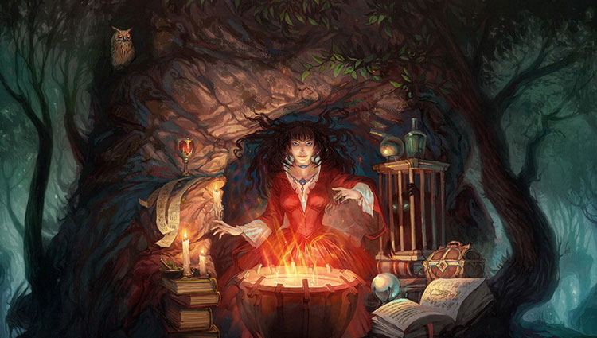
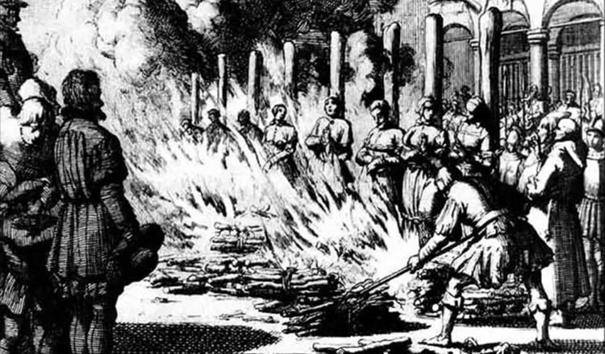
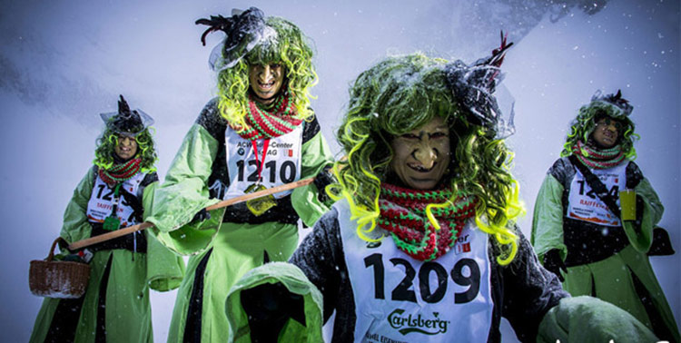
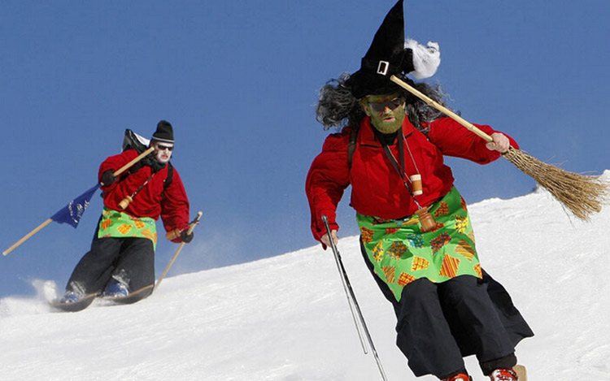

说起女巫，可谓是一段可歌可泣的血泪史。中世纪的医疗水平和科技水平极其有限，所以人们不能正确分辨一些很普通的疾病或在今天看来稀松平常的异常现象，在这些时候，女巫的存在就变得极其重要。这些所谓“女巫”，并非能利用巫毒之术害人于无形，也不像世人吹嘘的那样能与鬼神交流。他们大多是一些懂医术、识草药，能用土法子疗伤治病的女人，这使她们在缺医少药的黑暗时代，颇受民众的爱戴和崇拜。
好景不长，由于当时得教会势力对此非常恼火，他们认为只有上帝才能拯救众生，绝容不得其他自然神力的存在。于是女巫的“血光之灾”也随之到来了。1484年，两位教士撰写了《女巫之锤》，其中详细列举了很多种识别女巫的方法，并将女巫塑造成是恐怖的老妖婆，骑着扫帚到处飞，诅咒、投毒、散播瘟疫的形象，随之在欧洲发起了声势浩大的“女巫审判”，即把一些无辜的女子指控为“魔女”、“女巫”，而处以焚刑或放入锅中活活煮死，其残害女性之众是十分惊人的。
虽然女巫的故事令我们扼腕，但时至今日也都渐渐淡去，永远的变成了历史书中轻描淡写的几页描述。近年来说起女巫，除了《哈利·波特》，再也没有什么深刻的女巫形象可以映入小编的脑中啦！
言归正传，这女巫滑雪节究竟是怎么一回事呢？传说在中世纪，一名女巫居住在瑞士阿莱奇的这片区域，给当地居民生活带来严重困扰，直到女巫被烧死（估计又是被旧势力迫害致死）。
这一赛事始于1983年，每年1月，成百上千的带着尖帽子、骑着扫帚的女巫滑雪者就会来到这里参加滑雪比赛，据说是为了纪念一个由于谋杀丈夫而被烧死的老巫婆。（小编：真是够了！我看你们只是想变装滑雪吧喂！）
“女巫滑雪节”比赛全长7.5英里，最高海拔会达到5905英尺。儿童和成年人均可参加。参加比赛的选手，都手拿扫帚，身着女巫服饰，从山上滑雪而下。这是瑞士最危险的下坡滑雪比赛之一。当然节日上还有各种歌舞表演等，绝对是一月瑞士不可错过的经典节日。许多选手甚至还将滑雪杖做成了扫帚的形状，从山顶俯冲的同时似乎像是女巫骑着扫帚在天际驰骋般无拘无束。
脑补一下身着奇装异服的“女巫们”纷纷从高山上滑雪的盛景吧，惊险与激情并存；趣味与笑声同在。佩服他们勇敢的同时，也不禁为他们捏了把汗。“女巫滑雪节”的名声越来越大，每年一月这里都会汇集来自世界各地的滑雪以及女巫文化爱好者（大雾），相信，在不久的将来这个特殊的节日一定会被更多的滑雪迷们所熟知。
1、“女巫滑雪节”虽然有趣，但滑雪确是一项危险系数较高的运动，试想从几千米高山上俯冲而下的感觉吧，如果不是高手中的高高手，小编还是劝各位壮士们量力而行啊！